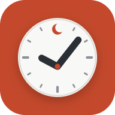

سياسة الخصوصية
Muslim To-Do List · قائمة مهام المسلم — آخر تحديث: ٣ أكتوبر ٢٠٢٦
باختصار
- التطبيق مجاني، صدقة جارية: بلا إعلانات، وبلا تحليلات، وبلا تتبّع، ولا نبيع أي بيانات ولا نشاركها مع أحد.
- دون تسجيل دخول تبقى كل بياناتك على جهازك فقط.
- التسجيل اختياري، وفائدته الوحيدة مزامنة مهامك وإعداداتك بين أجهزتك. ويمكنك حذف حسابك في أي وقت.
ما يُحفظ على جهازك
المهام والملاحظات والعادات والإعدادات وسجل الصلوات والحفظ والمفضلة تُحفظ في ذاكرة التطبيق على جهازك. المدينة أو الموقع الذي تختاره يُستعمل على جهازك لحساب مواقيت الصلاة واتجاه القبلة. وتبقى هذه البيانات حتى تحذفها أو تحذف التطبيق.
إذا سجّلت الدخول (اختياري)
- البريد الإلكتروني وكلمة المرور: لتسجيل الدخول فقط. كلمة المرور لا نراها، ويحفظها مزوّد الخدمة مشفّرة.
- مهامك وإعداداتك: تُرسَل إلى قاعدة البيانات لتصل إلى أجهزتك الأخرى. وقد تشمل الإعدادات المدينة التي اخترتها.
- الختمة الجماعية: اسم العرض الذي تكتبه، والأجزاء التي أخذتها، يراها أعضاء الختمة فقط.
- تُحفظ هذه البيانات لدى Supabase (خوادم في الاتحاد الأوروبي)، ومحمية بقواعد تمنع أي حساب من قراءة بيانات غيره، وتُنقل دائماً مشفّرة (HTTPS).
الخدمات الخارجية التي يطلب منها التطبيق محتوى
يجلب التطبيق النصوص والتلاوات والإذاعات من مصادر عامة، فتعرف هذه الخدمات عنوان الإنترنت (IP) لجهازك كأي موقع تزوره، ولا نرسل إليها أي بيانات شخصية:
- القرآن والتفاسير والتلاوات: alquran.cloud وislamic.network وeveryayah.com وquran.com وjsDelivr.
- الإذاعات والقرّاء والتفسير الصوتي: mp3quran.net، وإذاعة القرآن من القاهرة عبر radiojar.
- البث المباشر: منصة «الأولى» التابعة لهيئة الإذاعة والتلفزيون السعودية، ويوتيوب، وGlobecast.
- المساجد القريبة: عند استعمال هذه الأداة فقط، تُرسَل إحداثيات موقعك إلى خوادم OpenStreetMap (Overpass) للبحث عن المساجد حولك.
الأذونات على أندرويد
- الموقع: عند ضغطك «استخدم موقعي» فقط، لحساب المواقيت.
- الإشعارات والمنبّه الدقيق والتشغيل بعد إعادة التشغيل: ليصل الأذان والتذكير في وقته.
- التشغيل في المقدّمة (تشغيل الوسائط): ليستمر الأذان والإذاعة والشاشة مقفلة.
حذف الحساب والبيانات
من داخل التطبيق أو من الموقع:
- افتح التطبيق، أو الموقع وسجّل الدخول.
- اذهب إلى الإعدادات ← الحساب والمزامنة.
- اضغط «حذف حسابي» ثم أكّد.
يُحذف فوراً ونهائياً: الحساب، ومهامك وإعداداتك المحفوظة على الخادم، والختمات التي بدأتها، وعضويتك في غيرها (الجزء الذي قرأته في ختمة غيرك يبقى مقروءاً للمجموعة دون اسمك). أما البيانات على جهازك فتبقى عندك حتى تحذف التطبيق.
وإن لم تستطع الدخول، راسلنا من بريد الحساب على micro4tricks@gmail.com بعنوان «حذف حسابي»، ونحذفه خلال ٧ أيام.
الأطفال
التطبيق موجّه للعموم، ولا نجمع عمداً بيانات من أطفال دون ١٣ سنة. التسجيل غير مطلوب لاستعمال أي قسم.
التواصل والتغييرات
لأي سؤال: micro4tricks@gmail.com. وإن تغيّرت هذه السياسة نحدّث هذه الصفحة وتاريخها. والكود مفتوح على GitHub لمن أراد التحقق.
Privacy policy — in short
Muslim To-Do List · Last updated: 3 October 2026
- Free, made as an ongoing charity: no ads, no analytics, no tracking. We never sell or share data.
- Without an account, everything stays on your device.
- An account is optional and only syncs your tasks and settings between your devices. You can delete it at any time.
On your device
Tasks, notes, habits, settings, the prayer log, memorisation and favourites are kept in the app's storage on your device. The city or location you choose is used on the device to calculate prayer times and the Qibla.
If you sign in (optional)
- Email and password, only to sign in. We never see the password; the provider stores it hashed.
- Your tasks and settings (which may include the city you chose) are stored so they reach your other devices.
- Group khatma: the display name you type and the parts you take are visible to that khatma's members only.
- Stored with Supabase (servers in the EU), behind row-level security so no account can read another's data, and always sent encrypted (HTTPS).
Outside services the app reads from
Quran text, tafsir, recitations, radio and live TV come from public services (alquran.cloud, islamic.network, everyayah.com, quran.com, jsDelivr, mp3quran.net, radiojar, the Saudi Broadcasting Authority's Aloula platform, YouTube, Globecast). Like any website, they see your device's IP address; no personal data is sent to them. Nearby mosques: only when you use that tool, your coordinates are sent to OpenStreetMap's Overpass servers to find mosques around you.
Android permissions
- Location: only when you tap "Use my location", for prayer times.
- Notifications, exact alarms, start after reboot: so the adhan and reminders arrive on time.
- Foreground service (media playback): so the adhan and the radio keep playing with the screen off.
Delete your account and data
- Open the app, or the website, and sign in.
- Go to Settings → Account & sync.
- Tap "Delete my account" and confirm.
Deleted at once and for good: the account, your tasks and settings stored on the server, the khatmas you started and your memberships in others (a part you read in someone else's khatma stays marked as read for the group, without your name). Data on your device stays until you remove the app.
If you can't sign in, email micro4tricks@gmail.com from the account's address with the subject "Delete my account"; we delete it within 7 days.
Children, contact and changes
The app is for a general audience and does not knowingly collect data from children under 13; no section needs an account. Questions: micro4tricks@gmail.com. If this policy changes, this page and its date are updated. The code is open on GitHub.